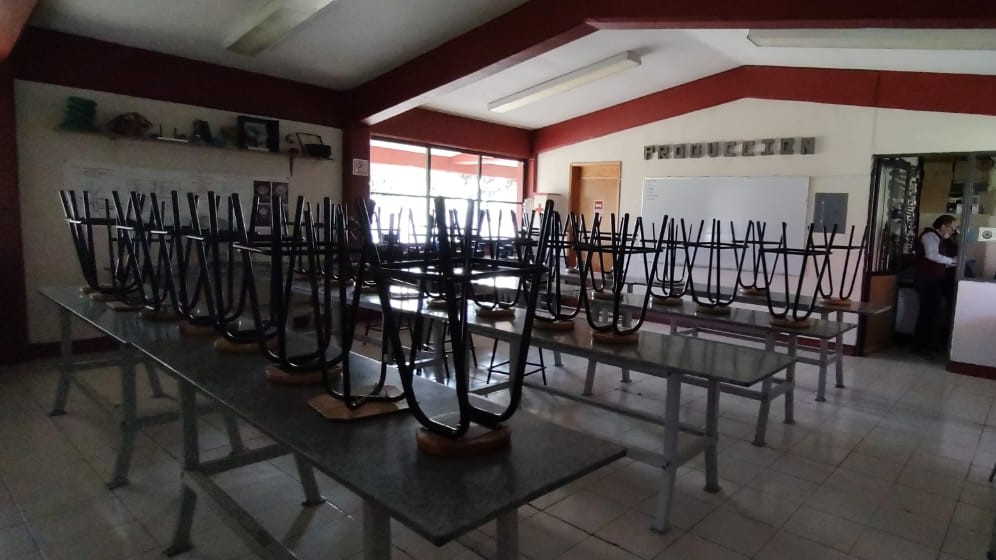

Características
Justificación
Ofrece las competencias profesionales que permiten al estudiante adquirir los conocimientos, habilidades y actitudes necesarias para desarrollarse en el campo laboral como auxiliar en los procesos administrativos o de su propio negocio; podrá desarrollar competencias genéricas relacionadas principalmente con la participación en los procesos de comunicación en distintos contextos.

Perfil de egreso
Se presentan las once competencias genéricas que permitan al alumno intervenir en su desarrollo o reforzamiento, y con ello enriquezca el perfil de egreso del bachiller. Como resultado del análisis realizado por los docentes elaboradores de este programa de estudios, se considera que el egresado de la carrera de Técnico en Procesos de Gestión Administrativa está en posibilidades de desarrollar las competencias genéricas.
Competencias Genericas
Estudiar Administración te permite adquirir conocimientos específicos de las diversas áreas, así como desarrollar múltiples habilidades basadas en el liderazgo, negociación, comunicación y toma de decisiones, todo esto con la finalidad de lograr una gestión y organización óptima de cualquier compañía.
Laboratorío
Los laboratorios ocupados en esta carrera deben contar con mesas extendidas, para gran cantidad de papeleo, con bancos o pupitres para los alumnos, el funcionamiento de los laboratorios no es necesario.
En esta carrera los laboratorios son variables debido a que sus practicas no requieren del uso de luz o aparatos electricos para su elaboracion por lo cual los laboratorios ocupados solo deben contar con las especifiaciones anteriores.
Materias semestrales
Primero
- Álgebra
- Inglés I
- Química I
- Tecnologias de la información y la comunicación
- Lógica
- Lectura, Expresión oral y Escrita I
- Acercamiento a la lectura I
- Tutorías
Segundo
- Geometría y Trigonometría
- Inglés II
- Química II
- Lectura, Expresión oral y Escrita II
- Auxilia en el registro y analisis de procesos contables de una organización
- Comprensión de textos II
- Tutorías
Tercero
- Geometría analítica
- Inglés III
- Biología
- Ética
- Auxilia en el área de contactos de una organización
- Tutorías
- Comprensión de textos III
Cuarto
- Cálculo diferencial
- Inglés IV
- Física I
- Ecología
- Asiste en el proceso de ventas en una organización
- Producción de trabajos IV
- Tutorías
Quinto
- Cálculo Integral
- Inglés V
- Ciencia, Tecnologia, Sociedad y Valores
- Apoya en la cadena productiva de una organización
- Producción de trabajos V
- Tutorías
Sexto
- Probabilidad y Estadística
- Filosofía
- Asignatura Propedéutica
- Asignatura Propedéutica
- Asiste en la gerencia de una organización
- Tutorías
Apartir de sexto semestre al alumno se le agregaran dos materias mas, llamadas propedeuticos.
Mas informacion
Comentarios

"Es buena si te gusta, llega a ser pesada por el emprendimiento, principios de la contabilidad, se te hará facil si realmente te apaciona la carrera y la quieres ejercer."
- Raul.
"La carrera de procesos de gestion administrativa, se me hace una carrera universitaria poco entretanida pero tediosa."
- Gustavo PT.